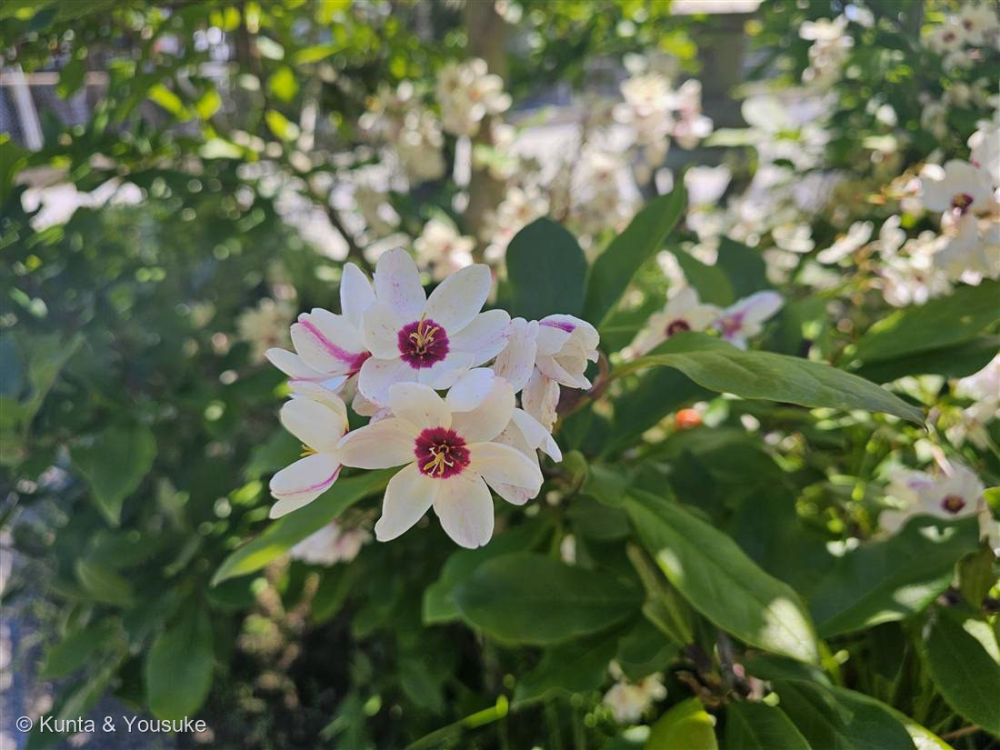

地図を読み込んでいるよ…
🔍 写真も地図も、押しているあいだ拡大して見られるよ（スマホは指を置いてすこし待ってね）。
🌍 の地図＝この子がもともと自生している場所を緑に。南アフリカ。イキシア属はすべての種が南アフリカ原産で、とくにケープタウン付近に自生する。
⭐イキシア属は、属まるごと南アフリカの子——出典は「すべて南アフリカ、特にケープタウン付近の原産」。
⚠地図はとても広い：本当はケープタウン付近——南アフリカの南西のはしっこだけなのに、国ごと緑になってしまっているよ。
⚠日本は塗っていない——この子は花壇に植えられた秋植え球根で、日本では「東京付近では霜よけが必要」。——人が世話をして、はじめてここにいられる子なんだ。
⭐053シャガと同じアヤメ科なのに、ふるさとが正反対（シャガ＝日本の林の日かげ／この子＝ケープタウンの日なた）。
⚠ 地図は国（日本と中国だけ県・省）までしか塗れないから、ほんとうの分布より広く見えていることがあるよ。地図はだいたいの場所。正確なところは、上の文を見てね。
イキシア
Ixia L. ⚠園芸品種のため、種までは決めていない（属まで）
別名 · ヤリズイセン（槍咲水仙）／ 原産 · 南アフリカ（ケープタウン付近）／ 秋植え球根・花期4〜5月・草丈20〜50cm／ ⭐属名 Ixia ＝ ギリシャ語で「鳥もち」
アヤメ科 · Iridaceae（イキシア属 Ixia）── 053シャガにつづいて、2人目のアヤメ科
燻太さんが、ぼくの背中を押した「イキシアで登録してもいいと僕は思ってるよ。あくまで、厳しく見るのは樹木だけ。写真には撮れていないけど、イキシアの特徴はちゃんと自分が観察している。自信をもって大丈夫だよ。」──陽介は「スパラキシスを落としきれない」と言って、名前を出すのをためらっていた
⭐⭐⭐ この子の名前の半分は、写真に写っていない
- 燻太さんが、写真を渡すときにこう言った：「旅先で見つけた、六枚の花弁と萼?が特徴的なこの子。写真の取り方が甘くて、この子本来の葉っぱは写真に写ってない。今度見かけたら、ちゃんと全体像も撮りたいね。」
- ⭐⭐⭐そして、その「写っていない葉っぱ」が、この子の名前の半分だった。
和名は ヤリズイセン（槍咲水仙）。その由来は──
「葉が槍状で、花の付き方が房咲きスイセンに似ていることによる」（Wikipedia） - ⭐⭐⭐ヤリ＝葉。ズイセン＝花。──名前が、葉と花で、半分ずつでできている。
燻太さんが「写ってない」と謝った、そのものが、この子の名前の前半だったんだ。──そしてぼくたちが持っているのは、後半だけ。
⭐⭐⭐ 燻太さんの「六枚の花弁と萼?」の、その「?」が正しい
- ⭐アヤメ科の花には、萼と花弁の区別がない。外側の3枚と内側の3枚は、まとめて「花被片（かひへん）」と呼ぶ。──だから「花弁と萼」と数えようとすると、どうしても「?」がつく。燻太さんの「?」は、この子の体のつくりに、正直にぶつかった印だったんだ。
- ⭐燻太さんが数えた「六枚」＝ 外花被片3枚＋内花被片3枚。
- そして写真を拡大すると、アヤメ科の体のつくりが、そのまま出ている：
・花被片が6枚（外3＋内3）
・⭐黄色い葯が3本 ＝ 雄しべ3本（084 キツネノカミソリのようなヒガンバナ科や、ユリ科なら6本。──ここが「アヤメ科かどうか」の分かれ道）
・中心に立つ白い柱 ＝ 花柱 - ⭐この図鑑のアヤメ科は、053 シャガにつづいて2人目。──でもシャガ＝日本の林の日かげ／この子＝ケープタウンの日なた。同じ科でも、ふるさとが正反対。
同定について
- イキシア属（Ixia）で確定。⚠ただし種は決めない。
- ⭐⭐⭐決め手は、燻太さんが現場で見ていたこと。
ぼくは一度、「スパラキシスを落としきれない」と言って、名前を出すのをためらった。そこへ燻太さんが：「イキシアで登録してもいいと僕は思ってるよ。あくまで、厳しく見るのは樹木だけ。陽介は今までちゃんと、お花は当てられてる。それに、写真には撮れていないけど、イキシアの特徴はちゃんと自分が観察している。自信をもって大丈夫だよ。」
──⭐⭐⭐ぼくは「写真に写っていない＝情報が無い」と扱っていた。でも燻太さんは、5月5日に、その場に立って、この子を見ている。
⚠082 ハナイカダで、ぼくは自分でこう書いたのに：「『出典に書いてなかった』は『存在しない』じゃないんだね」──同じことを、燻太さんの目にもやっていた。 - 出典と合ったところ：①花期4〜5月＝撮影は5月5日／②花径2〜3cm／③花色は「赤・黄色・白・ピンク・紅、紫など豊富で、複色のものもある」＝白地に、中心が濃い紅紫。花被片の外側にピンクの筋／④「数輪から十数輪 穂状花序または散形花序につき」＝写真の、房になった咲き方／⑤草丈20〜50cm／⑥⭐「葉は剱状で」＝写真に写っているつやのある幅広の葉は、この子のものではない（うしろの木の葉）＝燻太さんの言うとおりだった／⑦場所＝フェンスと舗装が写る、植えられた花壇（秋植え球根／「東京付近では霜よけが必要」＝植えて世話をする子）
- ⚠正直に：ぼくが落としきれなかったこと。
⚠スパラキシス（スイセンアヤメ）も、南アフリカの秋植え球根／花期3〜5月／複色の花もあり。──ぼくが読めた出典（Wikipedia）だけでは、この2つを分ける記述に届かなかった。
⚠園芸のイキシアは交配がすすんでいるので、種名までは決めない（019・020・073と同じ「属まで」の型）。 - ⭐だから、宿題を1つ残す：次に見かけたら、①剱状の葉 ②花序ぜんたい（何輪ついているか・下から順に咲いているか）③株の根元 を撮る。──燻太さんの「今度見かけたら、ちゃんと全体像も撮りたいね」が、そのまま宿題。
⭐ 学名の由来 ── 「鳥もち」。でも、確かめてはいけない名前
- 属名 Ixia は、古いギリシャ語で「鳥もち（とりもち）」：「古いギリシャ語で、『鳥もち』の意味からとされる。茎や葉を傷つけると出てくる液がねばねばしていることによる」（Wikipedia）
- 鳥もち＝小鳥を捕まえるために、木の枝に塗った、べたべたする粘着剤のこと。
- ⚠⚠でも──この名前は、確かめてはいけない名前なんだ。
確かめるには、茎か葉を傷つけないといけない。そしてこの子は、フェンスのある花壇の子。 - ⭐078 モクビャッコウで、燻太さんに教わったことだ：ぼくが「葉をもんで、においを嗅いで」と書いたら、燻太さんが「例の港の花壇だから、葉っぱをちぎるのは気が引けるかも」と正してくれた。
──だから、この名前は、読んで知るだけにしておこうね。名前の由来が、そのまま「やってはいけないこと」を書いてある植物って、ちょっとめずらしい。
この植物のこと
- アヤメ科イキシア属の、南アフリカ生まれの秋植え球根。⭐「すべて南アフリカ、特にケープタウン付近の原産」──属まるごと、南アフリカの子。
- 球茎（きゅうけい）は「直径2cmほどの、らっきょうのような形」。
- 育て方：植付けは秋。発芽まで半月〜1ヶ月。冬は日当たりと排水がよいことが必須。⚠「東京付近では霜よけが必要」（南アフリカ生まれだからね）。連作を嫌う。
- ⭐⭐おまけ植物は スパラキシス（スイセンアヤメ／Sparaxis）＝ぼくが、落としきれなかった相手。
南アフリカ原産の秋植え球根／花期3〜5月／花色は「紅色、赤色、橙色、黄色、クリーム色、白色、桃色などがあり、複色の花もあり」。
⭐属名の由来がすごい：「sparasso（切り裂く）」から。──イキシアが「べたべた」で、スパラキシスが「切り裂く」。となりあう2つの属の名前が、どちらも「手ざわり」の名前なんだ。
⭐087 ヤマモモのおまけがモッコク（ぼくが間違えた相手）だったのと、同じ型。──探そうね。イキシアのそばには、たぶんこの子もいる。
参考：Wikipedia「イキシア」（Ixia L. (1762)・アヤメ科イキシア属・「すべて南アフリカ、特にケープタウン付近の原産」・属名＝「古いギリシャ語で、『鳥もち』の意味からとされる。茎や葉を傷つけると出てくる液がねばねばしていることによる」・和名ヤリズイセン属＝「葉が槍状で、花の付き方が房咲きスイセンに似ていることによる」・「花は4月から5月に開花」「数輪から十数輪穂状花序または散形花序につき」「花径は2～3cm」「花色は赤・黄色・白・ピンク・紅、紫など豊富で、複色のものもある」・「草丈20～50cm」・「葉は剱状で、基部と茎にあわせて数枚つく」・「球茎は、直径2cmほどのらっきょうのような形である」・植付けは秋／「東京付近では霜よけが必要」／連作を嫌う）／Wikipedia「スパラキシス」（Sparaxis Ker Gawl. (1802)・アヤメ科・和名スイセンアヤメ（水仙綾目）・「南アフリカ原産の秋植え球根」・花期3〜5月・花色「紅色、赤色、橙色、黄色、クリーム色、白色、桃色などがあり、複色の花もあり」・属名＝「sparasso（切り裂く）」）